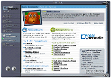
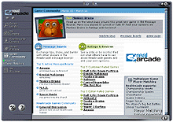
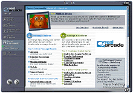

RealNetworks Confidential

|
To prepare for our upcoming beta release to the general public, we'd like your help running RealArcade through the wringer. To widen the variety of computers RealArcade's been tested on, we'd especially appreciate your help trying the Beta Preview on your home PC!
Amazon gift certificates will be awarded Tuesday, May 1 for the best new bugs (applies to RealArcade bugs only, not game bugs)
For bug reports, please include information about your system configuration
Please click here to see a sample bug reports.
What is RealArcade?
RealArcade is the easiest way to find, acquire and play games. It offers
services ranging from automatic system requirements checking to seamless
download and installation management. Playing great downloadable games
becomes as easy as point-and-click. See http://www.realarcade.com
for the full party line.
Will the RealArcade Beta Preview leave a mess on my machine?
No, RealArcade uninstalls quite cleanly, though we do leave behind some
minor files and reg settings (you can delete the RealArcade install
directory to get rid of the former).
Important note about
installing games
RealArcade uses a proprietary game installer technology to minimize download
size and to integrate the install experience inside RealArcade. We are in
the process of converting the games offered in RealArcade to use this new
installer; however, for this Beta release, not all games have been
converted.
Some games (like Demonstar) that use Installshield or Wise Installer will offer to "Run the Game" or "Download DirectX" at the end of the installation process. When offered these options, please select "Exit". You'll be able to launch the game from RealArcade.
Important notes about uninstalling
games
When uninstalling a game using RealArcade, please ensure that
the uninstaller has actually finished running before clicking
"OK" on the dialog claiming "the game uninstall has
finished". The uninstaller for games that use Wise
Installer (like Monkey
Brains) will cause the dialog to appear prematurely.
If you have problems uninstalling a game from within RealArcade, please use the "Add/Remove Programs" control panel in Windows to uninstall the game instead.
For reference, here are the games that utilize the RealArcade Installer, as well as a list of the third-party games that "Find Installed Games" currently knows how to find:
| Games that use the RealArcade Installer | 3rd party games that RealArcade can find |
| Aironix Attila Castrol Honda Superbike Dweep (not available in current catalog) Championship Hearts Championship Spades Hoyle Board Games Hoyle Card Games Kyodai Mahjongg Monkey Brains RC Daredevils Rolling Marbles Snood Solaris Super Bubble Pop Swarm Assault Tex Atomic's Big Bot Battles |
Age of Empires 2 Aliens vs. Predator Aliens vs. Predator Gold Battlezone Battlezone 2 Command and Conquer Deer Hunter 2 Deer Hunter 3 Deus Ex Diablo 2 Force Commander Half-Life Heroes of Might and Magic II Icewind Dale Mechwarrior 3 Mechwarrior 4 Microsoft Flight Simulator 2000 Motocross Madness Nascar Racing 3 Quake 2 Quake 3 Rainbow 6 Rogue Spear Red Alert Red Alert 2 Riven Rogue Spear: Urban Operations RollerCoaster Tycoon Rune Shogun Total War Tribes The Sims Starcraft Starcraft: Brood War Starfleet Command System Shock 2 Total Annihilation Unreal Tournament Warcraft 2 Who Wants to be a Millionaire Windows Hearts Windows Solitaire Windows Free Cell Windows Mine Sweeper |
This list based on Game News Update for Monday 4/23/01
| To: realarcade-defects@real.com Subject: RealArcade window should resize if you lower the screen resolution |
| - Dell Dimension L700 - 700mhz Celeron 64mb RAM - Windows 98 SE - nVidia TNT2 video card - DSL connection If you resize RealArcade to fill the screen at high resolution (e.g. 1024x768) and then lower your screen resolution (e.g. 800x600), you can't resize RealArcade to that smaller window size without first going back to the higher resolution Steps to reproduce the bug: 1. Set screen to 1024x768 Result: RealArcade is bigger than the screen, so I can't grab the bottom edge of RealArcade to resize it |
* System requirements will be lowered to Windows 95 OSR2 and Internet Explorer 4.0 after beta release
RealNetworks Confidential